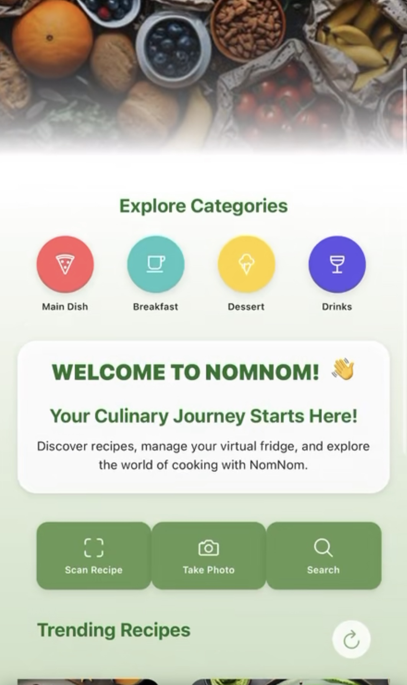
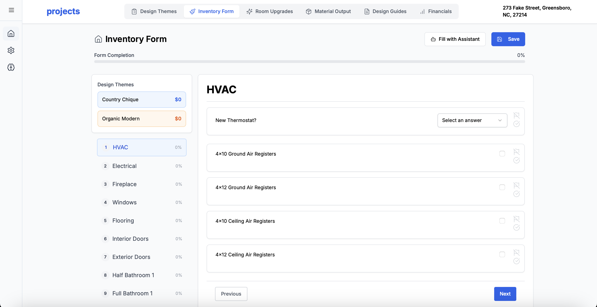
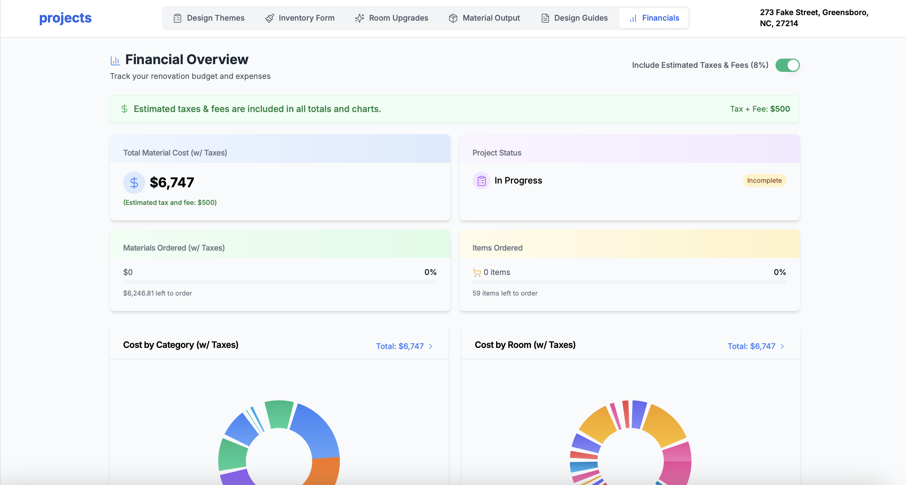

So like I said before on the previous page, I have already worked on quite a few full stack applications at this point in my education, and I'd like to talk briefly about each one! I have experience with React, Java, JS, Node.js, Typescript, C, Python, and many others that I have worked with briefly (I just feel like these are most relevant).
So firstly, I worked on a bookstore website for a Software Engineering course at UNCG, where me and a partner developed a full bookstore application similar to Amazon in it's early days. We had an API that pulled in live books for us, and had a fully functioning order and add to cart system, review and comment system, and functionality for production companies to add listings of their own books. While not properly released as an application, this project was lots of fun to develop.
Next of the notable projects, for my capstone project at the final step of my collegiate career at UNCG, me and my group developed an AI assistant food and recipe iOS application, that can recognize any dish that you take a photo of and give you a full recipe details list, with nutritional info, and a custom-trained AI assistant that would try and find meals that meet your dietary needs. We named it "NomNom", and it should be released on the iOS app store later this year!
Lastly, I have been working on a freelance contract for the last couple of months working on a real estate house flipping website, for renovators to use when they are in the process of renovating a house. We allow you to select from various design themes, fill out an inventory form for all the items you would need, and a system that adds all of your items to the cart for you upon completion of your input. It creates design guide PDFs for contractors to easily read and use, and even has a custom-built AI assistant (designed by me!) that can decipher user input and try and answer questions on the input form for them.
 